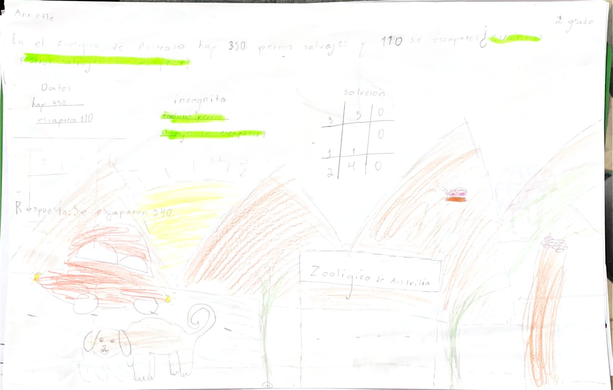
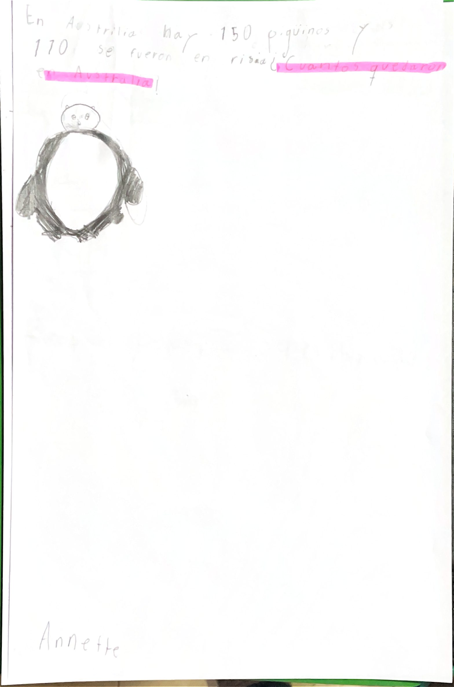

2.º grado
Annette Alana F.
Problema 1
Annette cuenta cómo se le ocurrió el problema 1

Problema 2
Annette cuenta cómo se le ocurrió el problema 2

Pieza 2-10 · Open House 2026 · Albert Einstein School
2.º grado
Annette cuenta cómo se le ocurrió el problema 1

Annette cuenta cómo se le ocurrió el problema 2

Pieza 2-10 · Open House 2026 · Albert Einstein School